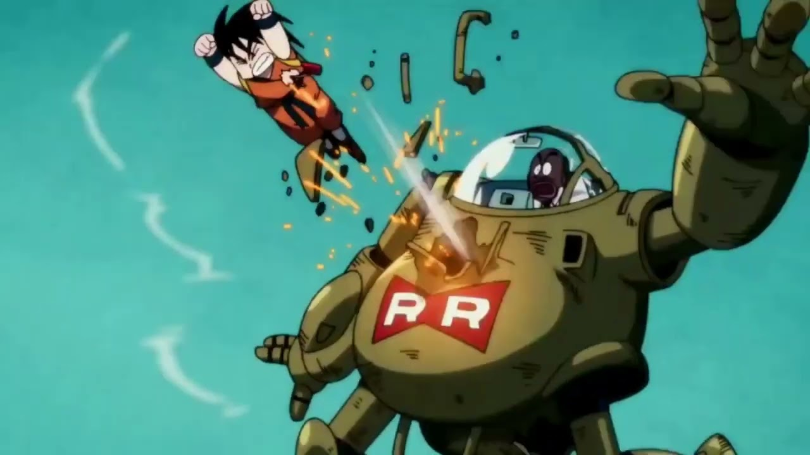

Dragon ball
Traducción al español: Bola de Dragón. es un anime escrito por Akira Toriyama y fue lanzado en 1986. La serie se divide en 6 arcos y en total tiene 153 episodios.
Arco de pilaf Arco de la 21.ª Edición del Torneo Mundial de las Artes Marciales Arco de la Patrulla Roja Arco de la 22.ª Edición del Torneo Mundial de las Artes Marciales Arco del Gran Rey Demonio Piccolo Arco de la 23.ª Edición del Torneo Mundial de las Artes MarcialesArgumento de la serie
Son Goku es un niño que vive aislado en una montaña. De fuerza extraordinaria y experto en artes marciales, el saiyajin Son Goku, que llegó a la Tierra en una cápsula, fue instruido por el maestro Gohan. Tras conocer a una chica llamada Bulma, ambos parten en un viaje lleno de aventuras con el objetivo de encontrar las siete bolas mágicas del dragón, objetos codiciados también por personajes siniestros.
Acá es donde empezó todo. Bulma choca a Goku con su auto y le cuenta que esta buscando las esferas del dragón.
Bulma le muestra a Goku que son las esferas del dragón, se da cuenta que Goku tiene la de 4 estrellas, pero Goku no se la quiere dar porque es el único recuerdo de su abuelo Gohan, entonces le pide que vaya con ella para conseguir las tres que le faltan para pedir el deseo.

Aquí es donde aparece el Maestro Roshi, personaje que se hará mas relevante mas adelante en la serie. Les da la esfera de 3 estrellas y le da a Goku la nube voladora que le habían regalado, ya que, él no tenía un corazón puro para subirse y Goku sí.
Goku y sus amigos tiene que enfrentarse contra 3 rivales para conseguir la otra esfera que les falta, Goku derrota a los 2 y el ultimo era su abuelo fallecido sin darse cuenta hasta que se sacó la máscara y lo reconoció y pudo verlo después varios años solo por unas horas.
Acá se da a conocer Krilin el cual seria el compañero de entrenamiento de Goku y serian grandes amigos. El maestro Roshi los entrenaría día a día para que lleguen al torneo de artes marciales.
Goku y Krilin se anotan a su primer torneo de artes marciales, en el que Goku queda en 2do lugar y Krilin en 4to lugar.

Goku termina con toda una organización criminal llamada Patrulla Roja que querían adueñarse del mundo con sus máquinas.
Goku sube a la torre Karin después de 2 semanas escalando sin parar ya que aquí se encontraba el Maestro Karin, el cual fue el entrenador del Maestro Roshi, con el objetivo de hacerse más fuerte para ganar el torneo.
Después del entrenamiento con Karin, Goku se anota a el siguiente torneo con el fin de ganarlo y hace aparición Ten Shin Han, el cual le gana en el torneo por muy poco y luego de esto se hacen amigos.
Una vez finalizado el torneo, Goku se olvidó algo ahí dentro y Krilin va a buscarlo. Goku presiente algo malo y va corriendo y encuentra muerto a su mejor amigo y una persona que presencio todo le dice para donde fue corriendo el asesino y lo persigue.
Acá Goku derrota a Piccolo Daimaku que era el mayor villano de toda la serie, pero el villano antes de morir deja un huevo con el que sería su sucesor.

Luego de años, Goku entrena para llegado el día pelear contra Piccolo en el torneo de artes marciales, el cual Goku sería el ganador.